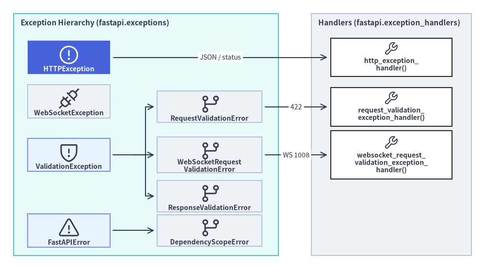

fastapi.exceptions
fastapi.exceptions で定義される HTTP・WebSocket・リクエスト／レスポンス検証・依存関係スコープ例外クラス群と、fastapi.exception_handlers の組み込み ASGI 例外ハンドラのリファレンスです。FastAPI はクライアント起因のプロトコルエラーや入力検証エラーを構造化 JSON レスポンスまたは WebSocket クローズフレームへ変換し、レスポンス契約違反や依存グラフの不整合はサーバー側のエラーとして明示的に検出します。

classHTTPException#
starlette.exceptions.HTTPException を継承するクライアント向け HTTP エラー例外です（fastapi 直下からも再エクスポートされています）。Starlette 基底クラスと異なり、detail に文字列だけでなく dict や list など任意の JSON シリアライズ可能なデータを受け付け、任意のカスタム headers とともに {"detail": ...} 形式で返却します。
class HTTPException(StarletteHTTPException):
def __init__(
self,
status_code: int,
detail: Any = None,
headers: Mapping[str, str] | None = None,
) -> None: ...
パラメータと属性#
| パラメータ / 属性 | 型 | デフォルト | 説明 |
|---|---|---|---|
status_code |
int |
(必須) | クライアントへ返却する HTTP ステータスコード（例: 401, 403, 404, 409）。 |
detail |
Any |
None |
JSON レスポンスの "detail" キーに格納する任意の値。None の場合は標準 HTTP ステータスフレーズが設定されます。 |
headers |
Mapping[str, str] | None |
None |
エラーレスポンスに付与する任意の HTTP ヘッダー（例: {"WWW-Authenticate": "Bearer"} や {"Retry-After": "30"}）。 |
使用例#
from fastapi import FastAPI, HTTPException
from fastapi.testclient import TestClient
app = FastAPI()
ITEMS = {"item-1": "Keyboard"}
@app.get("/items/{item_id}")
def get_item(item_id: str) -> dict[str, str]:
if item_id not in ITEMS:
raise HTTPException(
status_code=404,
detail={"code": "ITEM_NOT_FOUND", "item_id": item_id},
headers={"X-Error-Code": "ITEM_NOT_FOUND"},
)
return {"name": ITEMS[item_id]}
client = TestClient(app)
res = client.get("/items/missing")
assert res.status_code == 404
assert res.headers["x-error-code"] == "ITEM_NOT_FOUND"
assert res.json() == {"detail": {"code": "ITEM_NOT_FOUND", "item_id": "missing"}}
classWebSocketException#
starlette.exceptions.WebSocketException を継承する WebSocket 向け例外クラスです（fastapi 直下からも再エクスポートされています）。@app.websocket() エンドポイントまたはその依存関数内で送出すると、RFC 6455 準拠のクローズ code と任意の UTF-8 reason を伴って WebSocket セッションを終了します。
class WebSocketException(StarletteWebSocketException):
def __init__(
self,
code: int,
reason: str | None = None,
) -> None: ...
パラメータと属性#
| パラメータ / 属性 | 型 | デフォルト | 説明 |
|---|---|---|---|
code |
int |
(必須) | RFC 6455 で定義された有効な WebSocket クローズコード（例: status.WS_1008_POLICY_VIOLATION）。 |
reason |
str | None |
None |
WebSocket ピアへ送信する UTF-8 エンコードの任意の切断理由文字列。 |
使用例#
import pytest
from starlette.websockets import WebSocketDisconnect
from fastapi import FastAPI, WebSocket, WebSocketException, status
from fastapi.testclient import TestClient
app = FastAPI()
@app.websocket("/ws")
async def ws_route(websocket: WebSocket, token: str | None = None) -> None:
if token != "valid-session":
raise WebSocketException(
code=status.WS_1008_POLICY_VIOLATION,
reason="Missing or invalid session token",
)
await websocket.accept()
client = TestClient(app)
with pytest.raises(WebSocketDisconnect) as exc_info:
with client.websocket_connect("/ws"):
pass
assert exc_info.value.code == status.WS_1008_POLICY_VIOLATION
classValidationException#
FastAPI のリクエスト・WebSocket・レスポンス検証エラーの共通基底クラス（Exception 派生）です。Pydantic／FastAPI の検証エラー辞書シーケンスに加え、任意のエンドポイント位置情報 endpoint_ctx（function・path・file・line を持つ EndpointContext）を保持し、__str__() でファイル名や行番号を含む診断メッセージを整形します。
class ValidationException(Exception):
def __init__(
self,
errors: Sequence[Any],
*,
endpoint_ctx: EndpointContext | None = None,
) -> None: ...
def errors(self) -> Sequence[Any]: ...
パラメータとメソッド#
| メンバー | 型 / シグネチャ | 説明 |
|---|---|---|
errors |
Sequence[Any] |
パースまたはシリアライズ時に収集された構造化検証エラー辞書のシーケンス。 |
endpoint_ctx |
EndpointContext | None |
診断トレース用に function・path・file・line を記録する任意の TypedDict。 |
errors() |
def errors(self) -> Sequence[Any] |
保持している構造化検証エラーの Sequence[Any] を返します。 |
使用例#
from fastapi.exceptions import ValidationException
exc = ValidationException(
[{"type": "int_parsing", "loc": ("query", "limit"), "msg": "Invalid integer"}],
endpoint_ctx={
"function": "list_users",
"path": "GET /users",
"file": "routes.py",
"line": 42,
},
)
assert len(exc.errors()) == 1
assert "GET /users" in str(exc)
assert 'File "routes.py", line 42, in list_users' in str(exc)
classRequestValidationError#
HTTP リクエストのパス・クエリ・ヘッダー・Cookie・フォーム・JSON ボディが型検証または JSON デコードに失敗した際に送出される ValidationException サブクラスです。errors() に加えて受信した body を保持し、デフォルトでは request_validation_exception_handler() によって 422 Unprocessable Content に変換されます。
class RequestValidationError(ValidationException):
def __init__(
self,
errors: Sequence[Any],
*,
body: Any = None,
endpoint_ctx: EndpointContext | None = None,
) -> None: ...
パラメータと属性#
| メンバー | 型 / シグネチャ | 説明 |
|---|---|---|
errors() |
def errors(self) -> Sequence[Any] |
Pydantic／FastAPI の検証エラー辞書（loc, msg, type, input）のシーケンスを返す継承メソッド。 |
body |
Any |
解析済みのリクエストボディ（JSONDecodeError 時は生文字列、ボディなしの場合は None）。 |
endpoint_ctx |
EndpointContext | None |
エンドポイントの function・path・file・line を保持する任意のコンテキスト情報。 |
使用例#
from pydantic import BaseModel
from fastapi import FastAPI, Request
from fastapi.exceptions import RequestValidationError
from fastapi.responses import JSONResponse
from fastapi.testclient import TestClient
app = FastAPI()
class OrderIn(BaseModel):
quantity: int
@app.exception_handler(RequestValidationError)
async def custom_validation_handler(
request: Request, exc: RequestValidationError
) -> JSONResponse:
return JSONResponse(
status_code=422,
content={"error_count": len(exc.errors()), "received_body": exc.body},
)
@app.post("/orders")
def create_order(order: OrderIn) -> OrderIn:
return order
client = TestClient(app)
res = client.post("/orders", json={"quantity": "not-an-int"})
assert res.status_code == 422
assert res.json() == {"error_count": 1, "received_body": {"quantity": "not-an-int"}}
classResponseValidationError#
パスオペレーションの戻り値（または型付きストリームの yield 要素）が response_model や戻り値型アノテーションの検証に失敗した際に送出される ValidationException サブクラスです。レスポンス不整合はクライアント起因ではなくサーバー実装上の不具合であるため、明示的に捕捉しない限り 500 Internal Server Error として伝播します。
class ResponseValidationError(ValidationException):
def __init__(
self,
errors: Sequence[Any],
*,
body: Any = None,
endpoint_ctx: EndpointContext | None = None,
) -> None: ...
パラメータと属性#
| メンバー | 型 / シグネチャ | 説明 |
|---|---|---|
errors() |
def errors(self) -> Sequence[Any] |
レスポンススキーマ検証エラーのリスト（通常 loc=("response", ...)）を返します。 |
body |
Any |
エンドポイント関数が返却または yield した検証前の生オブジェクト。 |
endpoint_ctx |
EndpointContext | None |
サーバーログ出力に含まれる関数名・ルートパス・ファイル・行番号情報。 |
使用例#
import pytest
from pydantic import BaseModel
from fastapi import FastAPI
from fastapi.exceptions import ResponseValidationError
from fastapi.testclient import TestClient
app = FastAPI()
class UserOut(BaseModel):
id: int
@app.get("/user", response_model=UserOut)
def read_broken_user() -> dict[str, str]:
return {"id": "not-an-integer"}
client = TestClient(app)
with pytest.raises(ResponseValidationError) as exc_info:
client.get("/user")
assert exc_info.value.body == {"id": "not-an-integer"}
assert exc_info.value.errors()[0]["loc"] == ("response", "id")
classWebSocketRequestValidationError#
@app.websocket() エンドポイントに宣言されたパス・クエリ・ヘッダー・Cookie パラメータがルート本体に入る前の検証に失敗した際に送出される ValidationException サブクラスです。デフォルトでは websocket_request_validation_exception_handler() によって処理されます。
class WebSocketRequestValidationError(ValidationException):
def __init__(
self,
errors: Sequence[Any],
*,
endpoint_ctx: EndpointContext | None = None,
) -> None: ...
パラメータとメソッド#
| メンバー | 型 / シグネチャ | 説明 |
|---|---|---|
errors() |
def errors(self) -> Sequence[Any] |
WebSocket パラメータ解決時に収集された検証エラー辞書のシーケンスを返します。 |
endpoint_ctx |
EndpointContext | None |
WebSocket エンドポイントの function・path・file・line メタデータ。 |
使用例#
import pytest
from starlette.websockets import WebSocketDisconnect
from fastapi import FastAPI, WebSocket, status
from fastapi.testclient import TestClient
app = FastAPI()
@app.websocket("/rooms/{room_id}")
async def join_room(websocket: WebSocket, room_id: int) -> None:
await websocket.accept()
client = TestClient(app)
with pytest.raises(WebSocketDisconnect) as exc_info:
with client.websocket_connect("/rooms/not-an-int"):
pass
assert exc_info.value.code == status.WS_1008_POLICY_VIOLATION
classFastAPIError#
ルート登録時やアプリケーション構築時のフレームワーク設定不備に対して送出される RuntimeError サブクラスです（例: response_model=None を指定せずに Pydantic フィールドへ変換できない戻り値型を宣言した場合や、非対応となった Pydantic v1 モデルに対する PydanticV1NotSupportedError など）。
class FastAPIError(RuntimeError): ...
継承関係#
| 基底クラス | 主なサブクラス | 主な発生要因 |
|---|---|---|
RuntimeError |
DependencyScopeError, PydanticV1NotSupportedError |
不正なルート戻り値アノテーション、response_model=None 未指定の非 Pydantic 型、または依存関係スコープの不整合。 |
使用例#
import pytest
from fastapi import FastAPI, Response
from fastapi.exceptions import FastAPIError
app = FastAPI()
with pytest.raises(FastAPIError):
@app.get("/invalid-union")
def bad_return_annotation() -> dict[str, str] | Response:
return {"ok": "true"}
classDependencyScopeError#
scope="request" を持つジェネレータ（yield）依存関係が、より寿命の短い scope="function" のサブ依存関係に依存している場合にルート登録時の依存グラフ構築で送出される FastAPIError サブクラスです。関数スコープで既に終了済みのリソースをリクエスト終了時の後処理が参照してしまう不具合を未然に防止します。
class DependencyScopeError(FastAPIError): ...
スコープ整合ルール#
親 yield のスコープ |
サブ依存関係の scope |
判定結果 |
|---|---|---|
"function" |
"function" または "request" |
有効 — サブ依存リソースの寿命が親の終了処理以上となるため安全です。 |
"request" |
"request" |
有効 — 両方ともレスポンス送信完了後に終了処理が実行されます。 |
"request" |
"function" |
ルート登録時に DependencyScopeError が送出されます。 |
使用例#
from collections.abc import Generator
from typing import Annotated
import pytest
from fastapi import Depends, FastAPI
from fastapi.exceptions import DependencyScopeError
app = FastAPI()
def inner_dep() -> Generator[str, None, None]:
yield "inner"
def outer_dep(
val: Annotated[str, Depends(inner_dep, scope="function")],
) -> Generator[str, None, None]:
yield val
with pytest.raises(DependencyScopeError):
@app.get("/scope-mismatch")
def endpoint(res: Annotated[str, Depends(outer_dep, scope="request")]) -> str:
return res
async defhttp_exception_handler()#
fastapi.exception_handlers からインポート可能な組み込み非同期 HTTP 例外ハンドラです。Starlette または FastAPI の HTTPException を JSONResponse({"detail": exc.detail}, status_code=exc.status_code, headers=headers) に変換し、204 No Content や 304 Not Modified のようにレスポンスボディが許可されないステータスコードでは空ボディの Response を返します。
async def http_exception_handler(
request: Request,
exc: HTTPException,
) -> Response
パラメータ#
| パラメータ | 型 | 説明 |
|---|---|---|
request |
Request |
処理中の Starlette／FastAPI HTTP Request インスタンス。 |
exc |
HTTPException |
status_code、detail、および任意の headers を保持する HTTPException。 |
使用例#
import asyncio
from starlette.requests import Request
from fastapi import HTTPException
from fastapi.exception_handlers import http_exception_handler
scope = {"type": "http", "method": "GET", "path": "/items", "headers": []}
req = Request(scope)
json_resp = asyncio.run(
http_exception_handler(req, HTTPException(status_code=403, detail="Forbidden"))
)
assert json_resp.status_code == 403
assert json_resp.body == b'{"detail":"Forbidden"}'
empty_resp = asyncio.run(
http_exception_handler(req, HTTPException(status_code=204))
)
assert empty_resp.status_code == 204
assert empty_resp.body == b""
async defrequest_validation_exception_handler()#
RequestValidationError を処理する fastapi.exception_handlers の組み込み非同期ハンドラです。exc.errors() を jsonable_encoder() で変換した 422 JSONResponse({"detail": ...}) を返します。カスタム @app.exception_handler(RequestValidationError) 内でメトリクス記録や監査ログ出力を行った後に既定の 422 応答へ委譲する用途でもよく利用されます。
async def request_validation_exception_handler(
request: Request,
exc: RequestValidationError,
) -> JSONResponse
パラメータ#
| パラメータ | 型 | 説明 |
|---|---|---|
request |
Request |
検証失敗が発生した対象の HTTP Request。 |
exc |
RequestValidationError |
exc.errors() と exc.body を公開するリクエスト検証例外。 |
使用例#
import asyncio
import json
from starlette.requests import Request
from fastapi.exception_handlers import request_validation_exception_handler
from fastapi.exceptions import RequestValidationError
scope = {"type": "http", "method": "POST", "path": "/items", "headers": []}
exc = RequestValidationError(
[{"loc": ("body", "price"), "msg": "Input should be a valid number", "type": "float_parsing"}]
)
resp = asyncio.run(request_validation_exception_handler(Request(scope), exc))
assert resp.status_code == 422
assert json.loads(resp.body) == {
"detail": [
{"loc": ["body", "price"], "msg": "Input should be a valid number", "type": "float_parsing"}
]
}
async defwebsocket_request_validation_exception_handler()#
WebSocketRequestValidationError を処理する fastapi.exception_handlers の組み込み非同期ハンドラです。クローズコード WS_1008_POLICY_VIOLATION（1008）と jsonable_encoder(exc.errors()) の reason を渡して WebSocket 接続をクローズします。
async def websocket_request_validation_exception_handler(
websocket: WebSocket,
exc: WebSocketRequestValidationError,
) -> None
パラメータ#
| パラメータ | 型 | 説明 |
|---|---|---|
websocket |
WebSocket |
クローズ対象となるアクティブな FastAPI WebSocket 接続。 |
exc |
WebSocketRequestValidationError |
exc.errors() を提供する WebSocket パラメータ検証例外。 |
使用例#
import asyncio
from typing import Any
from fastapi.exception_handlers import websocket_request_validation_exception_handler
from fastapi.exceptions import WebSocketRequestValidationError
from fastapi.websockets import WebSocket
sent_messages: list[dict[str, Any]] = []
async def receive() -> dict[str, Any]:
return {"type": "websocket.connect"}
async def send(message: dict[str, Any]) -> None:
sent_messages.append(message)
ws = WebSocket({"type": "websocket", "path": "/ws", "headers": []}, receive=receive, send=send)
exc = WebSocketRequestValidationError([{"loc": ("query", "room"), "msg": "Field required"}])
asyncio.run(websocket_request_validation_exception_handler(ws, exc))
assert sent_messages[0]["type"] == "websocket.close"
assert sent_messages[0]["code"] == 1008